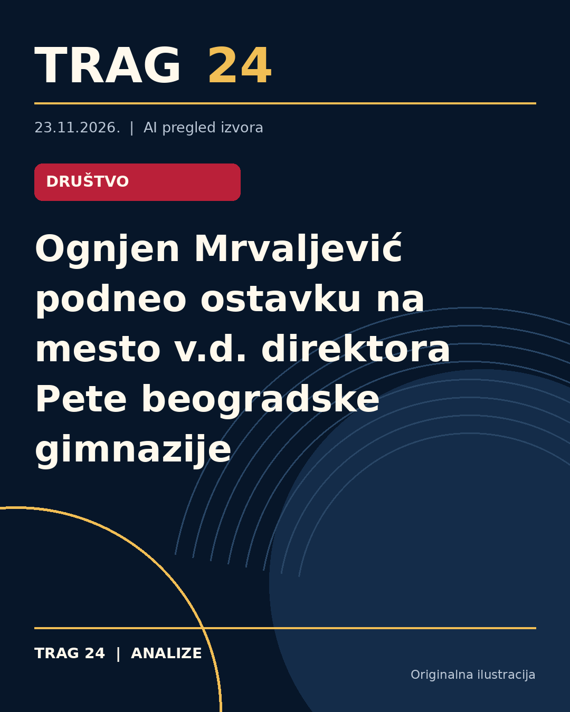

Ognjen Mrvaljević podneo ostavku na mesto v.d. direktora Pete beogradske gimnazije

ŠTA SE DOGODILO
Ognjen Mrvaljević, vršilac dužnosti direktora Pete beogradske gimnazije u Beogradu, podneo je neopozivu ostavku na tu funkciju. Ova informacija je potvrđena u nekoliko izvora, uključujući izvore bliske školskom kolektivu i advokata nekoliko suspendovanih profesora. Mrvaljević je ostavku saopštio zaposlenima putem imejla.
HRONOLOGIJA
Mrvaljević je imenovan za vršioca dužnosti direktora u februaru 2026. godine nakon isteka mandata prethodne direktorke. Njegovo imenovanje pratila je dugotrajna kriza u školi, uključujući protivljenje dela nastavničkog kolektiva i roditelja, kao i suspenzije nekih profesora. Tokom ovog perioda, Savet roditelja je zahtevao preispitivanje konkursne procedure i izrazio nezadovoljstvo podrškom Mrvaljeviću. Nakon višemesečnih tenzija, Mrvaljević je odlučio da podnese ostavku, ističući očekivanje da ministar prosvete poništi konkurs za izbor direktora.
ŠTA NAVODE IZVORI
U saopštenju kolektivu škole, Mrvaljević je istakao da je konkursna dokumentacija uredna i kompletna, ali da očekuje od ministra prosvete da poništi konkurs, kako je naveo, usled pritisaka i ucenama sa strane koje uključuju nekadašnje protivnike ministra, danas njegove saveznike. On je takođe izrazio razumevanje za one kolege koji nisu javno iskazali podršku zbog straha od medijskog linča. Izvor iz advokatskog tima profesora potvrđuje ostavku i navodi da su ostavke podneli i pomoćnici direktora.
ŠTA JE POTVRĐENO
Potvrđeno je da je Ognjen Mrvaljević podneo ostavku na mesto vršioca dužnosti direktora Pete beogradske gimnazije. Takođe, potvrđeno je da je tokom mandata bilo nesuglasica unutar školskog kolektiva i da je Savet roditelja pozivao na odgovornost direktora. Navodi o tome da je konkursna dokumentacija uredna dolaze direktno od samog Mrvaljevića. Takođe, informacije o pritiscima i ucenama kao i o očekivanju poništavanja konkursa predstavljaju njegove lične tvrdnje koje su mu prilagođeno prenete.
ŠTA NIJE POTVRĐENO
Nije potvrđeno da je ministar prosvete zvanično najavio poništavanje konkursa za direktora. Takođe, nema potvrde od nezavisnih izvora o pritiscima i ucenama na ministra prosvete, niti o pretnjama krivičnim prijavama kojima je Mrvaljević referisao. Detalji o tome ko konkretno stoji iza pritisaka ostaju nejasni.
ŠTA OSTАJE OTVORENO: Jasno je da će biti potrebno pratiti dalje poteze Ministarstva prosvete u vezi sa statusom konkursa i imenovanjem novog direktora Pete beogradske gimnazije. Takođe, ostaje nepoznato kako će se rešiti postojeća unutrašnja kriza u školi koja je trajala od momenta imenovanja Mrvaljevića. Upitno je i da li će ostavke pomoćnika direktora uticati na dalji rad škole i odnose u kolektivu.
Izvori
- https://www.b92.net/info/drustvo/287557/direktor-pete-beogradske-gimnazije-ognjen-mrvaljevic-podneo-ostavku/vest
- https://www.espreso.co.rs/vesti/beograd/1631438/direktor-pete-beogradske-gimnazije-podneo-ostavku
- https://vreme.com/drustvo/ognjen-mrvaljevic-ostavka-peta-beogradska-gimnazija/
Ova analiza je pripremljena uz pomoć veštačke inteligencije na osnovu javno dostupnih izvora. Navodi izvora nisu nužno nezavisno potvrđeni.